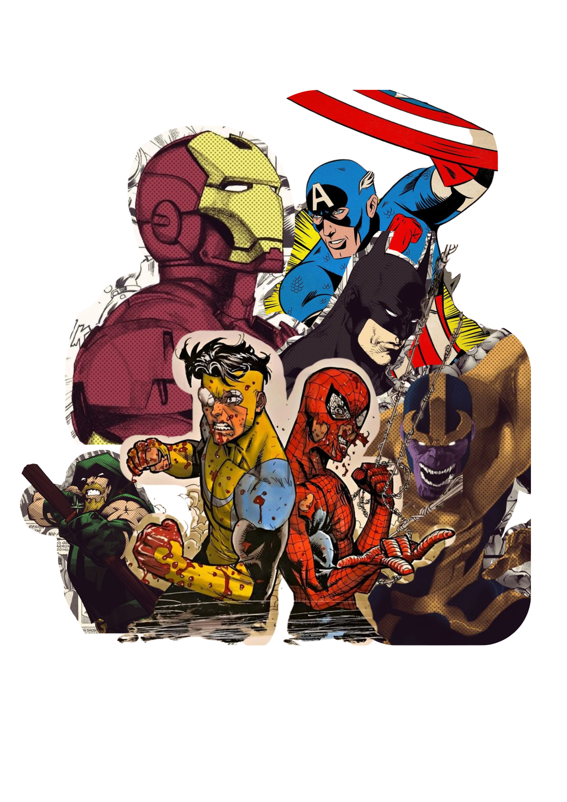
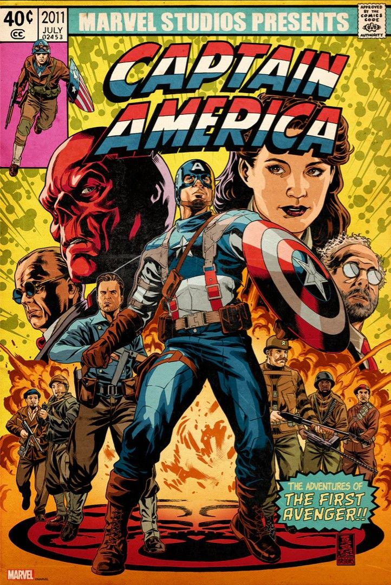
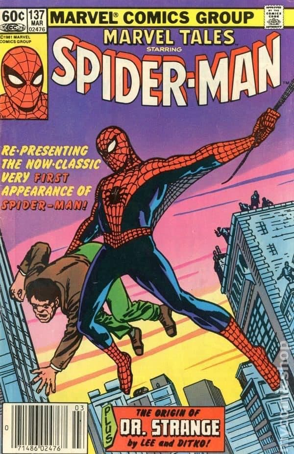
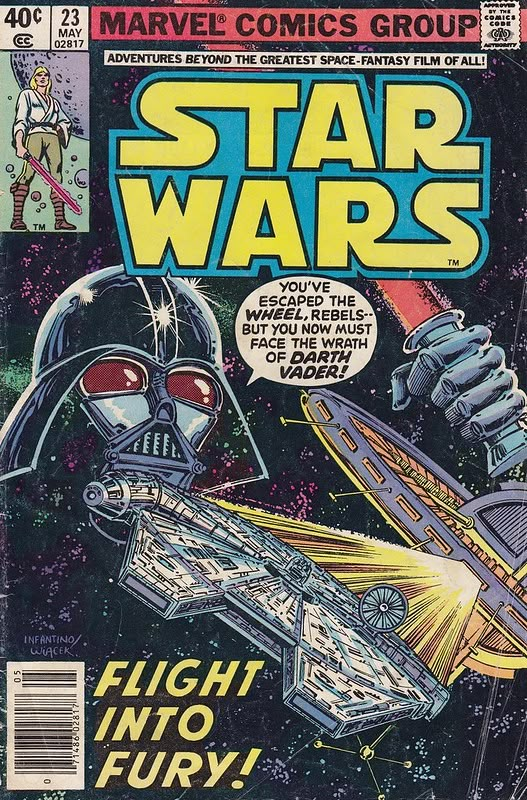
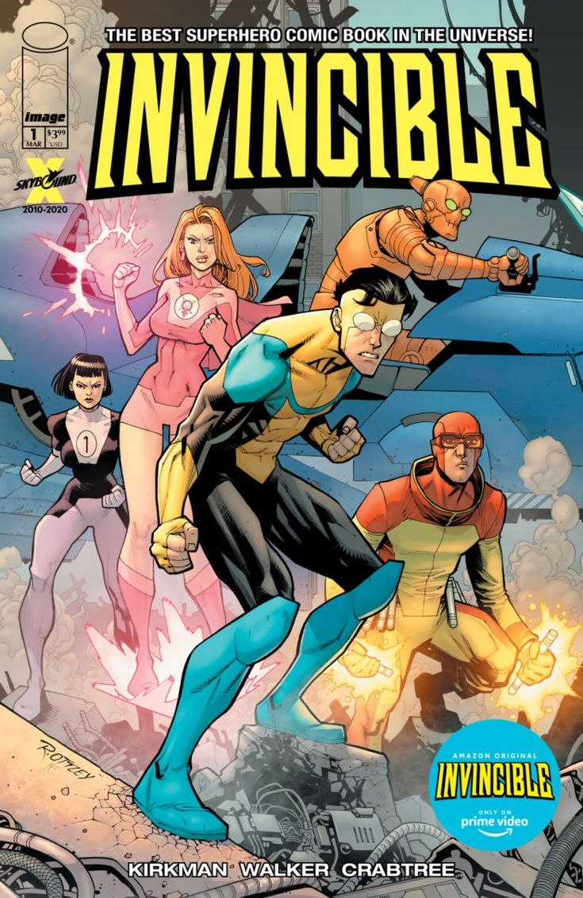
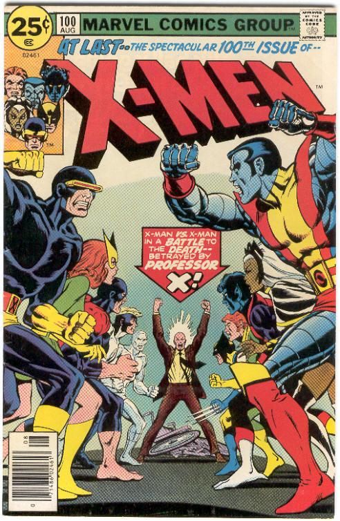

O que são Quadrinhos
Quadrinhos são uma forma de linguagem visual que combina ilustrações em sequência com textos para contar
uma
história. Essa narrativa pode ser curta, como em tiras de jornal, ou longa, como em álbuns e graphic
novels.
O principal elemento dos quadrinhos é a combinação de imagens estáticas organizadas em quadros (ou
"painéis"), geralmente acompanhadas de balões de fala, pensamentos, onomatopeias e legendas.
Os quadrinhos não são limitados a um estilo ou público específico. Existem quadrinhos infantis, adultos,
educativos, políticos, entre outros. Eles podem ser publicados em jornais, revistas, livros ou em
formato
digital, e fazem parte da cultura de diversos países, com estilos distintos como os mangás japoneses, as
bandes dessinées francesas, e os fumetti italianos.
Como Surgiram os Quadrinhos
Os quadrinhos surgiram como uma forma de contar histórias por meio de imagens sequenciais, geralmente
acompanhadas de textos. A origem dos quadrinhos pode ser traçada até as pinturas rupestres e hieróglifos
do
Egito Antigo, mas o formato mais próximo do que conhecemos hoje apareceu no século XIX.
O primeiro quadrinho moderno é frequentemente atribuído ao suíço Rodolphe Töpffer, que publicou em 1837
a
obra Histoire de M. Vieux Bois, combinando imagens e texto para narrar uma história. No entanto, foi nos
Estados Unidos que os quadrinhos realmente se popularizaram, principalmente com a publicação de tiras
humorísticas em jornais, como The Yellow Kid em 1895, considerado por muitos o primeiro personagem de
quadrinhos.
Com o tempo, os quadrinhos evoluíram, passando das tiras de jornal para revistas próprias, ganhando
popularidade mundial e abordando uma enorme variedade de gêneros — do humor ao drama, do romance à
ficção
científica.
Diferença entre Quadrinhos e HQs
Na prática, quadrinhos e HQs (abreviação de histórias em quadrinhos) são termos sinônimos no Brasil.
Ambos
se referem ao mesmo tipo de narrativa gráfica. A diferença está mais no uso da linguagem e do contexto
cultural.
“Quadrinhos” é o termo mais genérico e técnico, usado para se referir ao formato artístico em si. Já
“HQ” é
uma sigla que se popularizou para designar publicações de histórias em quadrinhos, especialmente aquelas
com
enredos mais longos, geralmente lançadas em revistas especializadas ou encadernados.
Em resumo:
Quadrinhos: o formato artístico e narrativo (imagem + texto em sequência).
HQs: uma forma de se referir aos quadrinhos, especialmente em revistas e coleções.

Filmes baseados em Hqs
Os filmes baseados em HQs (histórias em quadrinhos) são adaptações que transportam personagens, histórias e
universos dos quadrinhos para as telonas. Esse processo envolve várias etapas, desde questões legais até
decisões criativas. Tudo começa quando um estúdio adquire os direitos autorais da HQ — isso pode acontecer
tanto com editoras famosas como Marvel e DC, quanto com quadrinhos independentes.
Depois disso, é feita a escolha da história que será adaptada. Algumas vezes, o filme é baseado em uma saga
clássica dos quadrinhos, como "Guerra Civil" da Marvel ou "A Morte do Superman", por exemplo. Outras vezes,
o estúdio opta por criar uma história original apenas inspirada nos personagens.
A partir daí, entra o roteirista, que tem a missão de transformar a linguagem dos quadrinhos em um roteiro
cinematográfico. Isso pode envolver cortes e mudanças, já que a estrutura e o ritmo de uma HQ são bem
diferentes dos de um filme. O objetivo é fazer com que a história funcione dentro de cerca de duas horas de
duração, mantendo o essencial e, às vezes, atualizando elementos para o público moderno.
Outro aspecto importante é o visual. Quadrinhos têm um estilo visual marcante, e os diretores muitas vezes
tentam preservar essa identidade nos filmes. Isso inclui o uso de cores, figurinos, cenários e até
enquadramentos que remetem às páginas das HQs.
Contudo, os filmes nem sempre seguem as histórias originais à risca. Muitas vezes, mudanças são feitas nos
personagens, eventos ou nos próprios finais. Isso acontece por questões de tempo, narrativa ou simplesmente
para criar algo novo. Essas mudanças dividem opiniões: alguns fãs gostam da inovação, outros preferem
fidelidade total à HQ.
Exemplos populares desse tipo de adaptação são os filmes do Universo Cinematográfico da Marvel (MCU), como
"Homem de Ferro", "Os Vingadores" e "Pantera Negra", que criam um universo interligado entre os heróis. Já a
DC Comics também adaptou personagens famosos como "Batman", "Mulher-Maravilha" e "Coringa", com filmes que
variam bastante em estilo e tom.
Além das grandes editoras, há ainda HQs independentes que ganharam adaptações de destaque, como Watchmen, V
de Vingança, Kick-Ass, Scott Pilgrim Contra o Mundo e The Boys. Esses filmes e séries costumam ter uma
abordagem mais ousada, já que estão menos presos à imagem de uma marca famosa.
Resumindo, adaptar HQs para o cinema é um processo criativo que busca equilibrar fidelidade ao material
original com as exigências do formato cinematográfico. O sucesso dessas adaptações depende da forma como
esse equilíbrio é alcançado.

HQ (Capitão América, 1941):
Steve Rogers, um jovem frágil, se voluntaria para um experimento militar e se torna o supersoldado
Capitão
América, lutando contra os nazistas e o vilão Caveira Vermelha na Segunda Guerra Mundial.

HQ (Homem-Aranha, 1962):
Peter Parker, um estudante tímido, é picado por uma aranha radioativa e ganha superpoderes. Após a morte
de seu tio Ben, ele aprende que "com grandes poderes vêm grandes responsabilidades" e se torna o herói
Homem-Aranha.

HQ (Inspirado em "Desafio Infinito", 1991):
Após conseguir as Joias do Infinito, Thanos apaga metade da vida no universo. Os heróis sobreviventes se
unem para reverter o caos e enfrentam o Titã em uma batalha épica para restaurar o equilíbrio.

HQ (baseada nos filmes, lançadas a partir de 1977):
As HQs de Star Wars, adaptadas após o sucesso dos filmes, seguem a luta da Aliança Rebelde contra o
Império Galáctico, com heróis como Luke Skywalker, Princesa Leia e Han Solo enfrentando o vilão Darth
Vader em uma batalha épica pelo destino da galáxia.

HQ (Invincible, 2003 - por Robert Kirkman):
Mark Grayson, filho do super-herói mais poderoso da Terra, Omni-Man, descobre seus próprios poderes e
começa sua jornada como o herói Invencível — até que uma chocante verdade sobre seu pai muda tudo..

HQ (X-Men, 1963 - por Stan Lee e Jack Kirby)::
Os X-Men são mutantes, humanos com poderes especiais, liderados pelo Professor Xavier. Eles lutam por um
mundo onde mutantes e humanos possam coexistir, enfrentando o preconceito e inimigos como Magneto, que
acredita que os mutantes devem dominar os humanos.
.png)
.png)